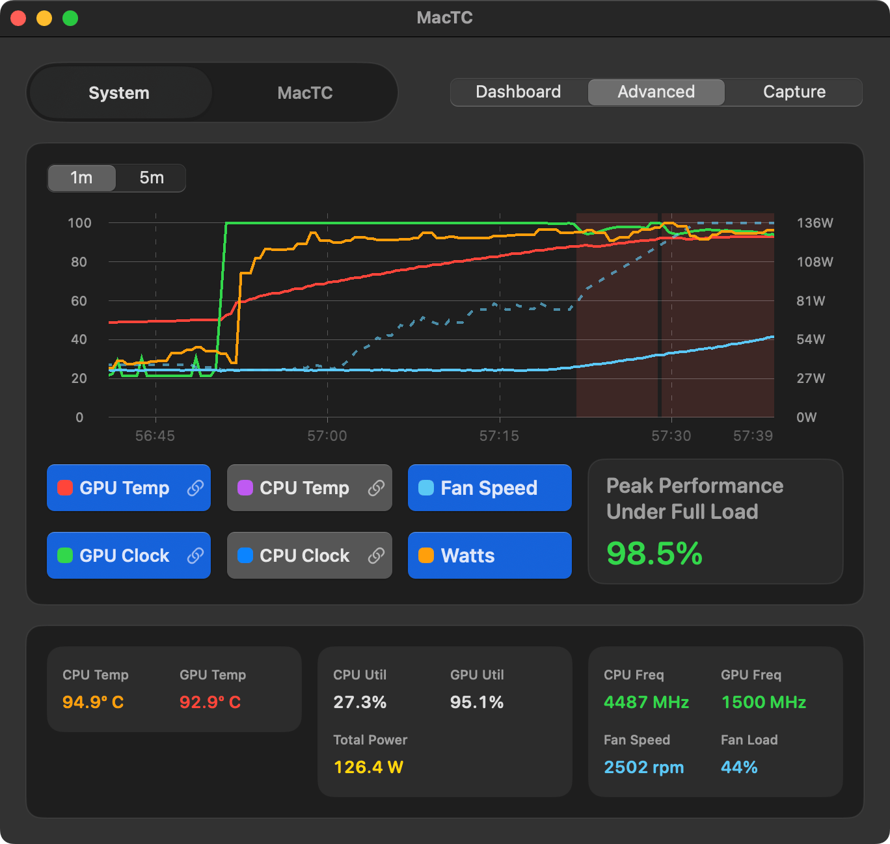

Local AI and ML
Long inference sessions, repeated prompts, and other sustained GPU-heavy work where thermal debt can drag clockspeed down over time.
MacTC changes fan behavior to pursue lower operating temperatures during sustained local AI, build, creative, and gaming workloads where you would rather keep speed than keep things quieter.
Tradeoff: more fan activity and more fan noise. Better thermal or performance outcomes are not guaranteed in every circumstance.
The GUI window is free forever. Purchase unlocks the background fan control. Purchases happen inside the app.
MacTC is not for everyday browsing, casual office work, or anyone whose first priority is keeping the machine as quiet as possible.
Long inference sessions, repeated prompts, and other sustained GPU-heavy work where thermal debt can drag clockspeed down over time.
Repeated local builds, analysis passes, and gaming-adjacent developer workflows where time lost to heat keeps compounding through the day.
Rendering, exports, and media workflows that stay heavy long enough for a quieter default to stop feeling free.


The free app shows system telemetry. System mode uses a dotted line to indicate where the fans would be under MacTC control. During the seven-day trial period and after purchase, MacTC mode will enforce it.
The paid layer is MacTC fan control that keeps running in the menu bar, watches sustained heat, and changes fan behavior when you want the more aggressive tradeoff.
Buy only if it proves useful on your machine, under your workload contour, with your tolerance for more fan noise.
The point is not “more fan all the time.” The point is changing the timing and shape of intervention when sustained heat starts threatening performance.
MacTC does not assume Apple’s default behavior is wrong for everyone. It watches the contour before it gets more aggressive.
The goal is to act before a long job quietly spends away clockspeed, while still accepting that results vary and no policy can guarantee better outcomes every time.
When MacTC does need more fan, it aims to climb over a few seconds and back off once the extra fan is no longer needed, rather than living at full blast without context.
If your first priority is keeping the machine as quiet as possible, MacTC is probably not for you.
No fan-control policy can guarantee better thermal or performance results in every circumstance.
A future macOS update may change thermal-management behavior or remove the access MacTC depends on. It is possible that a future Apple update could break MacTC permanently with no practical way to make that functionality work again.
In rare or unforeseen cases, MacTC may be less effective than intended or may worsen thermal behavior. Results vary by machine, workload, ambient conditions, firmware, sensors, and system state.
I realized I was sometimes missing out on the Mac performance I had purchased. Learn more about the path to MacTC's creation here.
I've been using a number of LLMs on my M4 Max MacBook Pro using
the amazing
LM Studio. I
noticed some sustained workloads seemed to get slower and
slower. This is easy to detect in an LLM harness like LM Studio
where it can show you the tokens per second (t/s) rate after
every response. When I ran a bunch of queries back to back on
some models, the fans would spin up as expected, but I noticed
my t/s falling off substantially. Using the outstanding
mactop
tool (brew install mactop), I immediately saw that
the GPU clockspeed was starting at 100%, and then progressively
dropping several minutes into long-running jobs. While I had
paid an extra $300 to jump from the available 32-core GPU to 40
cores, under a few minutes of heavy load, I was sometimes left
with a 24-core GPU's worth of performance.
I experimented with some of the available Mac apps for adjusting the fans. What I found was that for my GPU-heavy LLM workloads, the set-it-and-forget-it fan options were sometimes noisy, and still would not prevent all thermal throttling in cases where blasting the fans at 100% did help. Nobody wants a noisy machine, and Apple did a fantastic job with their tradeoffs, to a point. But I wanted the performance I bought, and if achieving that was sometimes louder, that was the tradeoff I was willing to make.
After a lengthy investigation of how my system handled power, heat, clockspeed, and fans, I found that the fixed-fan-percent-by-temperature model is simply unsuited for some heavy loads lasting more than a few minutes. The system has an inherent notion of the thermal soak properties of the SoC. In practice this means my Mac was quite lazy about ramping up the fans initially even when the CPU and GPU shot past 90°C, and it did not throttle speeds early. But if that heat load continued for a couple minutes, the fans would happily sit at a middling speed while reducing clockspeed and hence performance.
That is the problem I set out to solve for at least some workloads with MacTC. It defers to the system's fan choices by default, but when it observes power and heat rising, it should try to front-run that heat debt with more fan earlier, while still being as quiet as possible. And when thermal throttling begins, it will take the fans higher only for as long as it takes to end the throttling, and then attempt to fall off to the lowest fan speed that can sustain full performance.
When MacTC does increase fan speed, it deliberately takes a few seconds. Ideally, the end result at your desk is the difference between noticing "oh, my fans are on," and "wow, my fans just came on." That small whoosh turns out to be really aggravating all by itself. As it came together, I immediately understood this was an app worth sharing with others. I hope it can benefit you as much as it benefitted me during testing.